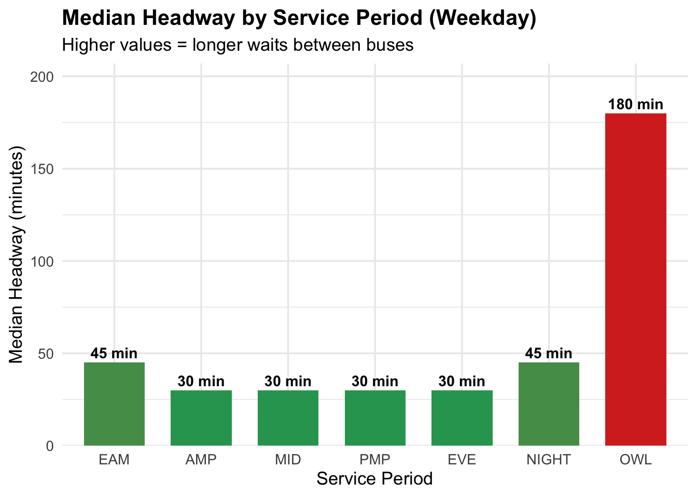
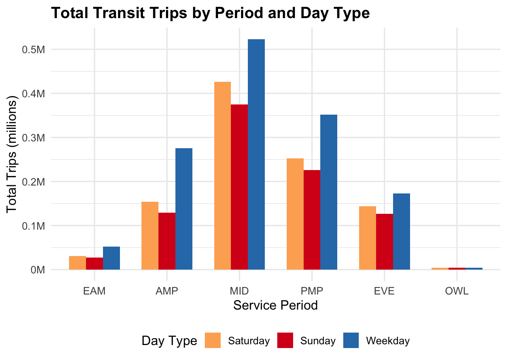
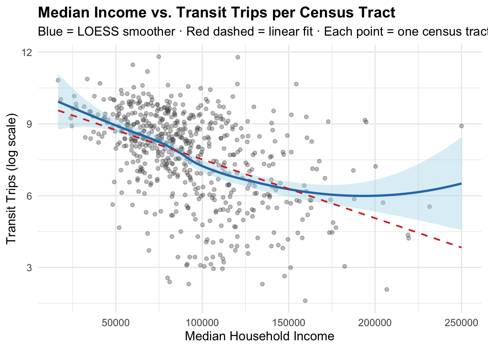

Project Metro-Transit
Motivation
Public transit is one of the most direct ways cities can expand economic opportunity. It determines whether someone can reach work, school, a doctor, or a grocery store without a car. In a car-dependent metro like the Twin Cities, who has access to frequent, reliable transit matters.
Our motivation for this project came from wanting to test a assumption: does Metro Transit actually serve the people who need it most? The Twin Cities is often considered one of the most economically segregated metros in the country, and transit equity is an important policy debate. We had spatial data to investigate the issue directly, which led us to the central question: does the transit network follow need, or does it follow something else?
This project matters because transit access is a mechanism for economic mobility. Understanding where service is strong, where itfalls short, and who bears the burden of those gaps is essential for advocates, planners, and policymakers working toward a more equitable region.
Research Question
Does Twin Cities transit adequately serve marginalized communities?
This overarching question breaks into three testable sub-questions, each corresponding to a thread of our analysis:
- Is there a relationship between neighborhood income and transit service volume?
- Do communities of color have greater or lesser access to transit routes?
- How does service quality (measured by headways and time-of-day coverage) vary across the network, and what does that mean for riders who depend on off-peak service?
The key idea we want to communicate: having a bus route nearby is not the same as having good transit. Frequency, hours of operation, and wait times matter as much as geographic coverage.
Background
Before diving into the analysis, a few concepts and terms need clarification.
Census tracts are small geographic units maintained by the U.S. Census Bureau, typically containing between 1,200 and 8,000 people. They serve as the primary unit of analysis throughout this report, allowing us to compare transit service levels across neighborhoods.
Headway refers to the number of minutes between consecutive trips on a given route segment. A headway of 10 minutes means a bus arrives every 10 minutes; a headway of 60 means riders may wait up to an hour. Headway is arguably the most important measure of transit quality — it determines whether transit is a genuinely viable option or a last resort.
Service periods in the dataset are broken into seven windows:
| Period | Abbreviation | Time Range |
|---|---|---|
| Early AM | EAM | 4:30 – 6:00 AM |
| AM Peak | AMP | 6:00 – 9:00 AM |
| Midday | MID | 9:00 AM – 3:00 PM |
| PM Peak | PMP | 3:00 – 6:30 PM |
| Evening | EVE | 6:30 – 9:00 PM |
| Night | NIGHT | 9:00 PM – 1:30 AM |
| Owl | OWL | 1:30 – 4:30 AM |
The 7-county metro refers to Hennepin, Ramsey, Dakota, Anoka, Washington, Scott, and Carver counties — the standard definition of the Twin Cities metropolitan area used by the Metropolitan Council.
ACS (American Community Survey) is an ongoing U.S. Census Bureau survey that provides annual demographic and economic estimates — including median household income and racial composition — at the census tract level.
TripCount is a field in the transit dataset representing the total number of scheduled transit trips serving a given road segment across all service periods. Higher values indicate more frequent service on that segment.
Data
Data Collection
We used two datasets in this project.
The Metro Transit Count and Headway Summary shapefile comes from the Minnesota Geospatial Commons, produced by the Metropolitan Council’s GIS batch process (SVC-GISBATCH). The dataset was last updated March 21, 2026. It contains 75,634 road segment features, each representing a stretch of road served by Metro Transit, with trip counts and headway values recorded for each of the seven service periods across three day types: weekday (WK), Saturday (SAT), and Sunday (SUN). Geometry is stored as multiline strings in the NAD83/UTM Zone 15N projected coordinate reference system.
The American Community Survey (2022) data was pulled via the tidycensus R package for all Minnesota census tracts, using variable B19013_001 (median household income), with tract polygon geometries included. This data is collected continuously by the Census Bureau and represents 5-year estimates centered on 2022.
Data Acquisition
The transit shapefile was downloaded directly from the Minnesota Geospatial Commons:
https://gisdata.mn.gov/dataset/us-mn-state-metc-trans-transit-count-headway-sum
Census tract data was accessed via the Census Bureau API using tidycensus::get_acs() with geometry = TRUE, requiring a Census API key.
Data Understanding
The transit shapefile contains 75,634 features and 23 attribute fields, including time-of-day trip counts (EAM_count, AMP_count, etc.), headway values (EAM_hdwy, AMP_hdwy, etc.), a service_id field (day type), and road segment identifiers. The TripCount field aggregates trips across all periods for a given segment and day type.
Reading layer `TransitCountHeadwaySummary' from data source
`/Users/hadleywilkins/Documents/COMP212/project-metrotransit-rishika-hadley/data/raw/shp_trans_transit_count_headway_sum'
using driver `ESRI Shapefile'
Simple feature collection with 75634 features and 23 fields
Geometry type: MULTILINESTRING
Dimension: XY
Bounding box: xmin: 442648 ymin: 4948258 xmax: 515316.2 ymax: 5020153
Projected CRS: NAD83 / UTM zone 15NCode
|
| | 0%
|
|= | 2%
|
|== | 3%
|
|=== | 4%
|
|==== | 5%
|
|===== | 6%
|
|====== | 8%
|
|======= | 10%
|
|======== | 12%
|
|========== | 14%
|
|=========== | 16%
|
|============ | 18%
|
|============= | 19%
|
|============== | 21%
|
|================ | 23%
|
|================= | 25%
|
|================== | 26%
|
|==================== | 28%
|
|===================== | 30%
|
|====================== | 31%
|
|======================= | 33%
|
|======================== | 34%
|
|========================= | 36%
|
|========================== | 38%
|
|============================ | 39%
|
|============================= | 41%
|
|============================== | 43%
|
|=============================== | 44%
|
|================================ | 46%
|
|================================= | 47%
|
|================================== | 49%
|
|=================================== | 51%
|
|===================================== | 52%
|
|====================================== | 54%
|
|======================================= | 55%
|
|======================================== | 57%
|
|========================================= | 59%
|
|========================================== | 60%
|
|=========================================== | 62%
|
|============================================ | 64%
|
|============================================== | 65%
|
|=============================================== | 67%
|
|================================================ | 68%
|
|================================================= | 70%
|
|================================================== | 72%
|
|=================================================== | 73%
|
|==================================================== | 75%
|
|====================================================== | 77%
|
|======================================================= | 78%
|
|======================================================== | 80%
|
|========================================================= | 81%
|
|========================================================== | 83%
|
|=========================================================== | 85%
|
|============================================================ | 86%
|
|============================================================= | 88%
|
|=============================================================== | 89%
|
|================================================================ | 91%
|
|================================================================= | 93%
|
|================================================================== | 94%
|
|=================================================================== | 96%
|
|==================================================================== | 98%
|
|===================================================================== | 99%
|
|======================================================================| 100% [1] "service_id" "line_direc" "RoadSeg_ID" "EAM_count" "AMP_count"
[6] "MID_count" "PMP_count" "EVE_count" "NIGHT_coun" "OWL_count"
[11] "TripCount" "EAM_hdwy" "AMP_hdwy" "MID_hdwy" "PMP_hdwy"
[16] "EVE_hdwy" "NIGHT_hdwy" "OWL_hdwy" "created_us" "created_da"
[21] "last_edite" "last_edi_1" "Shape_Leng" "GEOID" "NAME"
[26] "variable" "estimate" "moe" "geometry" Before analysis, several preparation steps were required:
- CRS reprojection: The transit lines were in NAD83/UTM Zone 15N (EPSG:26915), while the ACS tract geometries used geographic NAD83 (EPSG:4269). We reprojected the transit lines to match the ACS CRS using
st_transform()before performing any spatial operations. - Spatial join: We used
st_join()to match each transit line segment to the census tract polygon it intersects, then summarized total trips and median income per tract viagroup_by(GEOID) |> summarise(). - Metro filter: We filtered to the 7-county metro area using a
grepl()match on county names in the tractNAMEfield, yielding 784 census tracts. - Missing data: 177 metro tracts had missing median income estimates from the ACS. These tracts were retained in spatial visualizations but excluded from income-based scatter plots and regressions. Missing values tend to occur in group-quarters geographies, parks, and industrial zones.
- Skewness:
TripCountvalues were right-skewed (min: 1, median: 31, mean: 49, max: 836), solog1p()transformation was applied in choropleth maps and scatterplots to reduce the influence of extreme values.
A key quality check confirmed that 0 transit line segments failed to match a census tract — every segment in the dataset fell within a valid geography.
Data Insights
Transit service concentrates in lower-income, high-POC urban tracts
The side-by-side choropleth maps comparing median household income to log-scaled transit trip density reveal a clear spatial inverse: the urban cores of Hennepin and Ramsey counties — which have the lowest median incomes and highest concentrations of people of color — have by far the most transit service. The wealthiest outer-ring counties are near-blank on the transit map.
Code
common_theme <- theme_void() +
theme(
plot.title = element_text(size = 14, face = "bold", hjust = 0.5),
legend.position = "bottom"
)
p1 <- ggplot(metro_tracts) +
geom_sf(aes(fill = median_income), color = "white", size = 0.1) +
scale_fill_viridis_c(labels = scales::dollar, name = "Median Income") +
labs(title = "Median Household Income") +
common_theme
p2 <- ggplot(metro_tracts) +
geom_sf(aes(fill = log1p(total_trips)), color = "white", size = 0.1) +
scale_fill_viridis_c(option = "magma", name = "Transit Trips (log)") +
labs(title = "Transit Usage") +
common_theme
p1 + p2 +
plot_annotation(
title = "Income vs Transit Usage Across Census Tracts",
subtitle = "Exploring spatial inequality and transportation patterns"
)
The county-level bar chart reinforces the pattern. Carver County — the wealthiest in the metro — averages just 334 trips per tract, compared to over 9,000 in Hennepin. Bar color encodes mean income, making the income–service inverse immediately visible.
This pattern is consistent with how most American cities are structured: higher-density, lower-income urban neighborhoods are more transit-oriented by design, and investment has historically followed those corridors.
“Served” does not mean “well-served”
The spatial picture is only half the story. The temporal analysis reveals that the network is built around peak-hour commuters, and service quality degrades sharply outside those windows. The chart below shows how headways lengthen dramatically as the day moves away from peak commute times.
Code
headway_long <- df %>%
st_drop_geometry() %>%
filter(service_id == "WK") %>%
select(ends_with("_hdwy")) %>%
pivot_longer(everything(), names_to = "period_raw", values_to = "headway") %>%
filter(!is.na(headway), headway > 0) %>%
mutate(
period = str_remove(period_raw, "_hdwy") %>% str_to_upper(),
period = factor(period, levels = c("EAM", "AMP", "MID", "PMP", "EVE", "NIGHT", "OWL"))
)
headway_summary <- headway_long %>%
group_by(period) %>%
summarise(
median_hdwy = median(headway, na.rm = TRUE),
mean_hdwy = mean(headway, na.rm = TRUE),
.groups = "drop"
)
ggplot(headway_summary, aes(x = period, y = median_hdwy, fill = median_hdwy)) +
geom_col(width = 0.7, show.legend = FALSE) +
geom_text(aes(label = paste0(round(median_hdwy), " min")),
vjust = -0.4, size = 3.8, fontface = "bold") +
scale_fill_gradient(low = "#2ca25f", high = "#d73027") +
scale_y_continuous(expand = expansion(mult = c(0, 0.15))) +
labs(
title = "Median Headway by Service Period (Weekday)",
subtitle = "Higher values = longer waits between buses",
x = "Service Period", y = "Median Headway (minutes)"
) +
theme_minimal(base_size = 13) +
theme(plot.title = element_text(face = "bold"))
Key takeaways:
- Median headways during AM and PM Peak are ~30 minutes — already lengthy by transit standards.
- Median night headways (9:00 PM – 1:30 AM) rise to 45 minutes, with a mean exceeding 90 minutes.
- Owl service has a median headway of 180 minutes — one bus every three hours.
- Only 56.4% of weekday segments have any night service; just 9.3% have Owl service, concentrated along a handful of core corridors.
Workers who depend on transit for evening or overnight shifts — disproportionately lower-wage workers in service, healthcare, and hospitality — face a dramatically different system than peak-hour commuters.
Weekend service is smoother but thinner
Weekday trip volumes (~1.54 million total) substantially exceed Saturday (~1.16M) and Sunday (~1.02M). More importantly, the shape of service differs: weekday trips show a strong dual-peak structure reflecting 9-to-5 commute patterns, while weekend service is more evenly distributed across the day. This matters for equity — lower-income riders are more likely to work non-standard hours and depend on weekend transit, which covers fewer routes with wider headways.
Code
trips_by_day <- df %>%
st_drop_geometry() %>%
select(service_id, starts_with("EAM_count"), starts_with("AMP_count"),
starts_with("MID_count"), starts_with("PMP_count"),
starts_with("EVE_count"), starts_with("NIGHT_count"),
starts_with("OWL_count")) %>%
pivot_longer(-service_id, names_to = "period_raw", values_to = "count") %>%
filter(!is.na(count)) %>%
mutate(
period = str_remove(period_raw, "_count") %>% str_to_upper(),
period = factor(period, levels = c("EAM", "AMP", "MID", "PMP", "EVE", "NIGHT", "OWL")),
day_type = case_when(
service_id == "WK" ~ "Weekday",
service_id == "SAT" ~ "Saturday",
service_id == "SUN" ~ "Sunday"
)
) %>%
filter(!is.na(day_type)) %>%
group_by(day_type, period) %>%
summarise(total = sum(count, na.rm = TRUE), .groups = "drop")
ggplot(trips_by_day, aes(x = period, y = total / 1e6, fill = day_type)) +
geom_col(position = "dodge", width = 0.7) +
scale_fill_manual(
values = c("Weekday" = "#2c7bb6", "Saturday" = "#fdae61", "Sunday" = "#d7191c"),
name = "Day Type"
) +
scale_y_continuous(labels = function(x) paste0(x, "M")) +
labs(
title = "Total Transit Trips by Period and Day Type",
x = "Service Period", y = "Total Trips (millions)"
) +
theme_minimal(base_size = 13) +
theme(
plot.title = element_text(face = "bold"),
legend.position = "bottom"
)
The income-transit relationship is real but noisy
Both a linear regression and a LOESS smoother show a weak negative relationship between median household income and total trip count: lower-income tracts tend to have more service. However, the relationship has wide scatter. Some lower-income tracts have very little service; some moderate-income tracts near high-frequency corridors have substantial coverage.
Code
metro_tracts %>%
st_drop_geometry() %>%
filter(!is.na(median_income), !is.na(total_trips)) %>%
ggplot(aes(x = median_income, y = log1p(total_trips))) +
geom_point(alpha = 0.35, color = "#4d4d4d", size = 1.5) +
geom_smooth(method = "loess", color = "#2c7bb6", fill = "#abd9e9", linewidth = 1.1) +
geom_smooth(method = "lm", color = "#d73027", linetype = "dashed", se = FALSE,
linewidth = 0.8) +
labs(
title = "Median Income vs. Transit Trips per Census Tract",
subtitle = "Blue = LOESS smoother · Red dashed = linear fit · Each point = one census tract",
x = "Median Household Income", y = "Transit Trips (log scale)"
) +
theme_minimal(base_size = 13) +
theme(plot.title = element_text(face = "bold"))
This suggests that density, route history, and corridor geography explain service distribution at least as much as income alone. The network was not explicitly designed with income equity as a primary goal, and the spatial alignment with lower-income tracts may be largely incidental to land-use patterns.
A surprising result worth investigating
The scatter plot of total trips vs. percent people of color shows only a weak positive relationship — weaker than the visual map overlay would suggest. This disconnect is likely a methodological artifact: our spatial join assigns the full trip count of any line segment to the single tract it intersects, which can inflate counts in tracts that are physically large or positioned at route intersections. This is one of the more important limitations to address in future work.
Conclusions
The data tells a story that is partially encouraging and partially concerning.
At the broadest level, transit service is concentrated where lower-income communities and communities of color live — the network is spatially aligned with need in relative terms. The urban cores of Minneapolis and Saint Paul are well-covered, and the county-level gradient in service volume tracks (inversely) with income.
But spatial coverage is only half of transit equity. When we examine when service runs and how often, a different picture emerges. The system is structured for peak-hour, 9-to-5 commuters. Riders who need transit most — lower-wage workers, people without cars, those working evenings and overnight — face headways that make transit impractical for daily life. A 90-minute mean night headway is not a system that functions as reliable transportation; it is a system that merely tolerates being used outside of convenient hours.
The answer to our guiding question — does Twin Cities transit adequately serve marginalized communities? — is: geographically, yes, to a degree; temporally, much less so. The gap between where routes exist and when those routes actually run is where equity is lost.
Limitations and Future Work
Several limitations of this analysis are worth naming directly.
Spatial join methodology. Our st_join() assigns the full trip count of each line segment to whichever tract polygon it intersects. Segments that cross tract boundaries are counted in only one tract, which can artificially inflate or deflate per-tract totals — particularly for large or irregularly shaped tracts near corridors. A more rigorous approach would use st_intersection() to clip segments to tract boundaries and weight trip counts proportionally by the share of segment length within each tract.
Missing income data. 177 metro tracts (~22%) have missing ACS median income estimates and were excluded from regression analyses. These missing values are not random — they tend to occur in group-quarters geographies and institutional areas — which may introduce systematic bias.
Cross-sectional snapshot. The dataset represents a single point in time (March 2026). We cannot draw conclusions about trends, or whether recent service changes have disproportionately affected certain communities.
Service supply vs. ridership demand. Our analysis measures service supply (scheduled trips per segment) rather than actual ridership. High supply in a tract does not necessarily mean high ridership, and vice versa. Incorporating actual boarding data from Metro Transit’s ridership records would provide a more complete picture.
Race/ethnicity analysis is incomplete. Racial demographics appeared in the main project summary but were not fully integrated into the individual EDA analyses. A rigorous equity analysis would incorporate ACS race variables (e.g., B03002) and conduct multivariate analysis controlling for density, income, and racial composition simultaneously.
Future directions could include: accessibility metrics measuring how many jobs or essential services can be reached within 30 minutes by transit from each tract; a longitudinal analysis of service changes; disaggregation of headway equity by income quintile; and comparison with peer cities to contextualize the Twin Cities’ equity performance.